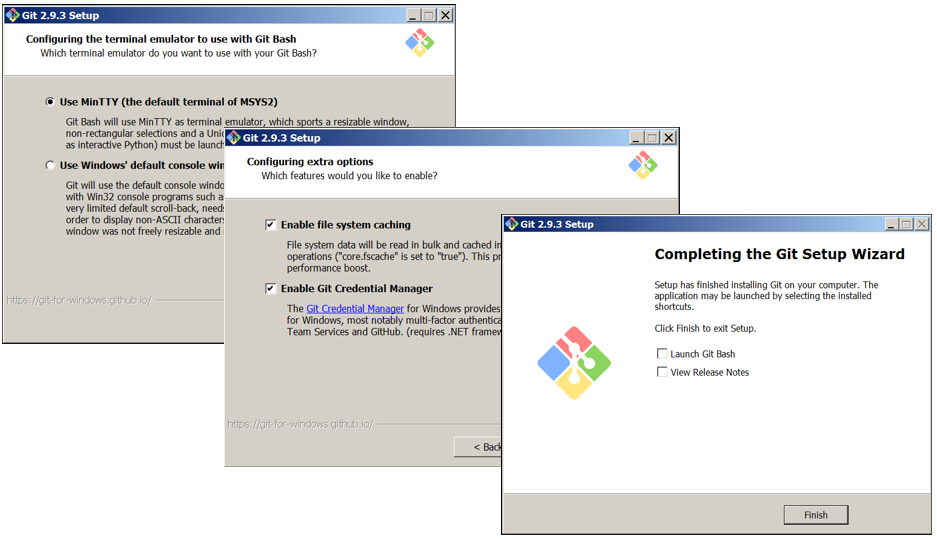

EI-TEA Partner T-Time
EI-TEA Partner entschied sich im Jahr 2016 eine Zeiterfassung für den internen Gebrauch zu erstellen. Schnell wurde diese Zeiterfassung auch um die Projektbuchung erweitert. Diese Projetbuchung ermöglichte es EI-TEA Partner, noch besser auf Kundenanforderung zu reagieren. Durch diese genaue Abrechnung der Arbeitszeiten in Projekten konnten wir gemeinsam mit unseren Kunden Verbesserungen in internen Abläufen erreichen.
Nun erfolgt der nächste Schritt. Wir stellen diese Software als Open-Source Projekt zur Verfügung. Fast Wöchentlich werden dadurch neue Funktionen evaluiert und implementiert. Es ist großartig anzusehen, wie der Funktionsumfang kontinuierlich zunimmt.
Möchten Sie am Laufenden gehalten werden? Abonnieren Sie einfach unseren Newsletter, der Sie immer wieder mit Neuerungen versorgt.
NewsletterFunktionsumfang
- Kommen / Gehen Buchungen
- Projektbuchung
- Mandantenfähig
- Kunden und Projektverwaltung
- Benutzerverwaltung
- Benutzerverwaltung mit LDAP Anbindung
- Multi-language support
- Urlaubsplanung (inkl. Genehmigungsprozess)
- Urlaubs- und Anwesenheitsübersicht
- Datenexport in CSV
- Reports
- Zeiterfassungsterminal
- Update Funktion
- und vieles mehr....
Vermissen Sie Funktionen? Bitte sprechen Sie kurz mit uns.
Bitte bedenken Sie, dass es sich hierbei um eine Vorabversion handelt. Bei einer Vorabversion verstecken sich möglicherweise noch Bugs, auch beim Design kann sich noch maßgeblich etwas ändern.
Funktionen, die gerade entwickelt werden:
- Windows Client für Zeit und Projektbuchungen
- Backup Funktion
- Taskplaner für Gruppenaufgaben
- Zeiterfassung als Cloud Anwendung
- iOS und Android Client
Installation T-Time
- Webserver (z.B. Apache in der Version 2.x)
- MySQL oder MariaDB
- PHP in der Version 5.6.x
- freien Festplattenspeicher
Als Betriebssystem wird jedes gängige Betriebssystem unterstützt. Bitte stellen sie sicher, dass ein Zeitgeber (NTP) auf ihrem Betriebssystem konfiguriert ist, um immer die richtige Zeit zu erhalten.
Für die Installation unter Windows benötigen sie entweder Windows 7, Windows 8.x, Windows 10, Windows Server 2008R2 oder Windows Server 2012(R2). Bitte installieren sie vor der Installation bzw. in regelmäßigen Abständen alle Updates die von Microsoft über die Windows Update Funktion bereitgestellt werden. Darüber hinaus sollte das Betriebssystem durch einen Virenscanner geschützt werden. Um einen Datenverlust zu vermeiden, denken sie bitte an ihr Backup.
Hinweis: Diese Installation sollte nur für Testzwecke verwendet werden. Für eine produktive Nutzung wird XAMPP nicht empfohlen.
Vorbereitung
Um unter Windows PHP, MySQL/MariaDB und Apache betreiben zu können, wurde von „Apache Freunden“ XAMPP entwickelt. XAMPP ermöglicht eine leichte Installation und Verwaltung dieser Softwareprodukte. Für zukünftige Versionen wird auch GIT benötigt. GIT ermöglicht es, Updates von Softwarekomponenten auf Knopfdruck durchzuführen.
Installation XAMPPUm XAMPP zu erhalten, klicken sie bitte auf folgenden Link: → XAMPP ←
Laden sie sich bitte die entsprechende Version herunter – in unserem Fall die Version 5.6.23. - und installieren sie diese:
Bitte stellen sie sicher, dass eine Firewall Regel entsprechend erstellt wird, falls die Firewall bei ihnen aktiv ist.
Installation GIT
Um GIT unter Windows zu installieren, laden sie sich bitte das entsprechende Setup-File → HIER ← herunter. Git-2.9.3 ist momentan die aktuellste Version dieser Software. GIT wird für die Updatefunktion der Software benötigt.

T-TIME Setup
Die Installation der Zeiterfassung ist ganz einfach. Extrahieren sie dazu einfach die heruntergeladene T-TIME ZIP Datei in den
„htdocs“ Ordner von XAMPP.
Diesen Ordner erreichen sie am besten über das ControlPanel von XAMPP.
Die aktuelle
ZIP Datei können sie → HIER ← herunterladen.
Das Verzeichnis unter htdocs sollte wie folgt aussehen:
Wenn nun alle benötigten Dienste und alle benötigten Dateien vorhanden sind, können die Dienste gestartet werden.
Starten der Dienste
Zum Abschluss müssen nun die Dienst Apache und MySQL gestartet werden. Dies können sie bequem über das XAMPP Control Panel erledigen.
Über den Button Admin wird der lokale Browser mit dem XAMPP Dashboard gestartet. Damit können sie überprüfen, ob die vorherigen Schritte erfolgreich durchgelaufen sind.
Nun können sie über http://localhost/zeit das Setup der Zeiterfassung starten.
Der erste Benutzer mit der ID1 ist der Admin Benutzer. Dieser Benutzername kann nicht geändert werden. Bitte definieren sie in ersten Schritt ein Kennwort für diesen Benutzer.
Der zweite Schritt bezieht sich schon auf das Unternehmen, in dem sie die Zeiterfassung verwenden möchten. Bitte definieren sie einen Namen für dieses Unternehmen.
Über EI-TEA Partner

EI-TEA Partner GmbH ist einzigartig, wetten wir?
Analysieren – Besprechen – Empfehlen –> unser Ziel ist die beste Lösung für Sie!
Wir fokussieren uns nicht starr auf technische Produkte, wir bündeln On-Demand-Lösungen mit Cloud-Technologie, wir holen uns das Beste aus beiden Welten.
Ob klassisches Datenmanagement, technische oder organisatorische Security – von uns erhalten Sie die Unterstützung die Sie wirklich brauchen.
Sie bevorzugen einen Partner mit offenem Gesprächsklima? Ein Systemhaus, das auch Ihr Unternehmen verstehen will? Ein junges Team, das sich mit dem technischen Rad der Zeit mit dreht?
Dann ist EI-TEA Partner Ihr Partner!